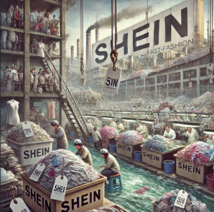

stimulus
Programer
Bataille
Résumé
Cet article est un exemple des dérives d’entreprise en termes d’éthique. L’exemple ici est celui de Shein, géant chinois de la fast-fashion.
Source
Shein : L’empire de la fast fashion et de ses dérives
Shein est le parfait exemple du mauvais élève en termes d’éthique professionnelle. En effet le géant chinois de la fast fashion s’est imposé mondialement comme un acteur incontournable dans l’industrie textile à l’aide des ses prix imbattables et de son catalogue pléthorique de vêtements. Ces principes ont fait de Shein l’entreprise de la mode éphémère dont la croissance est la plus rapide en termes de téléchargement au monde sur l’année 2021. Pourtant derrière ce succès, l’entreprise cache des pratiques controversées qui suscitent de nombreuses critiques en matière d’éthique, de conditions de travail ou encore d’impact environnemental.
Shein repose un modèle d’ultra fast fashion qui pousse à l’achat impulsif. Chaque jour, des milliers de nouveaux produits sont mis en ligne, ce qui crée une nouveauté constante mais surtout un sentiment d’urgence chez les consommateurs. Le rythme effréné, le large catalogue et le prix très attractif poussent les acheteurs, notamment les plus jeunes, à acheter en grande quantité des vêtements bon marché destinés à être jetés après seulement quelques utilisations. Cependant, la large gamme de vêtements disponible sur le catalogue entraîne des conditions de travail alarmantes. Les vêtements Shein sont produits dans des usines situées principalement en Chine, où les normes sociales sont souvent peu respectées. Des enquêtes ont révélé des conditions de travail déplorables. Tout d’abord le salaire très bas de 574 euros maximum par mois pour 500 vêtements par jour soit environ 4 centimes par vêtement produit. Vous vous en doutez, en plus du salaire misérable, les travailleurs réalisent souvent des journées de travail excessives pouvant atteindre 18h afin de terminer les 500 vêtements demandés. Et bien sûr, les contrats de travail ou les protections sociales n’existent pas. Les salariés peuvent également voir leur rémunération journalière réduite des deux tiers s’ils commettent une erreur. La marque s’accorde une générosité à offrir à ses employés 1 journée de repos par mois. Ces pratiques exploitent une main-d’œuvre vulnérable, principalement composée de mère de famille. Cependant, avec ses 35 milliards d'euros de chiffre d'affaires dans le monde dont 1,28 en France en 2023, la marque de mode n’a pas l’air de vouloir investir dans le traitement de ses employés.
Bien évidemment avec un modèle d'ultra fashion, les conséquences sont désastreuses pour l’environnement mais aussi pour la santé. La surproduction entraîne une consommation excessive d’eau, une pollution chimique due aux teintures et une énorme quantité de déchets textiles. De plus, l’usage intensif de matière synthétique tel que le polyester aggrave le problème de microplastiques. Mais bien sûr Shein opère dans une relative opacité. L’entreprise est régulièrement critiquée pour son manque de transparence sur ses pratiques notamment en termes de développement durable. Ses produits échappent parfois aux normes internationales, notamment au niveau de la sécurité chimique à tel point qu’un risque pèse sur la santé des acheteurs.
Greenpeace a fait analyser 47 produits vendus par Shein en 2022 et le résultat n’est pas fameux. Dans 32 d’entre eux, ils ont trouvé des produits chimiques dangereux en quantité inquiétante. Et dans 15% des vêtements analysés, ces produits chimiques dépassent même les limites fixées par la réglementation européenne. Par exemple, les phtalates ( un groupe de substances chimiques utilisées dans les plastiques pour les assouplir et augmenter leur flexibilité ) ont été reconnus comme perturbateurs endocriniens. Le laboratoire en a trouvé dans des chaussures vendues par Shein en quantité hallucinante, entre 100 à 600 fois au-dessus des limites européennes.
Enfin, grâce à une stratégie marketing extrêmement agressive sur les réseaux sociaux tels que TikTok et Instagram, la marque captive les jeunes notamment via des influenceurs et des publicités ciblées. L’une des stratégies de la marque est de proposer à de nombreuses jeunes femmes de leur offrir une dizaine de vêtements de leur choix dans le catalogue et d’en faire la pub sur leurs réseaux sociaux. Il n’y pas de salaire, ni de contrat, cependant les jeunes femmes acceptent souvent ce genre d’échange puisqu’elles se voient offrir des vêtement, en échange d’une simple pub. En contrepartie, la marque permet de multiplier ses apparitions sur les réseaux sociaux afin d’attirer le plus possible les regards. La micro-influence n’est pas la seule ressource dont dispose la plateforme. Il existe le ciblage algorithmique : des suggestions personnalisées en temps réel et mises en avant par la plateforme. “Les algorithmes de Shein testent en permanence si l’utilisateur réagit à un contenu donné, grâce à un phénomène de sérendipité », explique Maria Mercanti-Guérin, enseignante-chercheuse en marketing digital à Sorbonne Université, à Numerama. Autrement dit, l’algorithme soumet constamment le client à de nouveaux contenus et voit sa réaction. Va-t-il cliquer dessus ? L’ajouter à la liste ou directement dans son panier ? La moindre réaction est analysée en direct par l’algorithme et s’adapte à son comportement. Et celà représente un grand danger. En effet la publicité a toujours joué sur l’identification, cependant dorénavant l’utilisateur fait l’objet d’une publicité ciblée et sur mesure. Et cela prend une ampleur mondiale avec la visibilité donnée sur internet et les réseaux sociaux. Ainsi, Shein peut se permettre de copier impunément les créations de petits designers indépendants et de petites marques qui ne peuvent concurrencer la marque et son budget publicitaire. Cette pratique souligne un mépris pour la propriété intellectuelle et affaiblit les petits créateurs.
Shein incarne les excès de la fast fashion : une consommation frénétique au mépris des droits humains et de l’environnement. Si l’entreprise prospère grâce à une demande massive, elle illustre aussi les limites d’un modèle économique insoutenable. Pour inverser la tendance, une prise de conscience collective est essentielle, tant chez les consommateurs que dans les politiques publiques, afin de promouvoir une mode plus responsable.